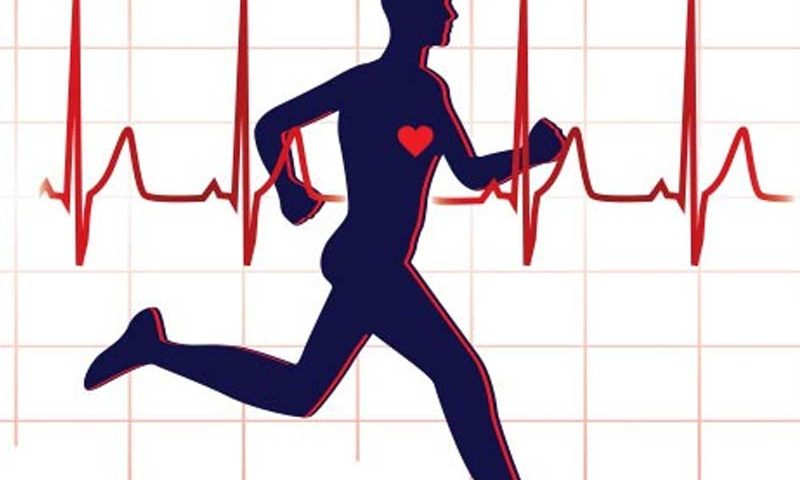

Os diversos benefícios da atividade física já não são segredo para ninguém. Quando um indivíduo abraça essa prática, é possível desfrutar de uma série de vantagens para sua saúde e qualidade de vida — seja no âmbito pessoal ou profissional.
Mas, infelizmente, nem todos investem na ideia, principalmente após a chegada da tecnologia, que, de forma indireta, incentiva a população a levar uma vida mais sedentária.
Por essa razão, é de extrema importância que as empresas realizem, frequentemente, campanhas para promover a prática regular de exercícios físicos, como uma maneira de manter o bem-estar de seus funcionários.
ealizar exercícios físicos é indicado para todos indivíduos. No entanto, não são todas as pessoas que conseguem seguir essas recomendações — fato que pode levar ao sedentarismo e comprometer, significativamente, a saúde.
Frequencia CardiacaA frequência cardíaca indica a quantidade de vezes que o coração bate por minuto e o seu valor normal, em adultos, varia entre 60 e 100 batimentos por minuto em repouso. Porém, a frequência considerada normal tende a variar de acordo com alguns fatores, como a idade, o nível de atividade física ou a presença de alguma doença cardíaca.
deve-se praticar exercícios regularmente porque isto melhora a capacidade cardíaca e assim o coração consegue bombear a mesma quantidade de sangue, com menos esforço, o que naturalmente diminui a frequência cardíaca em repouso.
Para medir, pode-se colocar o dedo indicador e médio na parte lateral do pescoço, onde se sente os batimentos cardíacos e contar quantas pulsações se percebe durante 1 minuto. O cálculo também pode ser feito contando os batimentos até 15 segundos e multiplicando o resultado por 4. Outra forma mais fidedigna é utilizar um pequeno aparelho chamado frequencímetro que se coloca no dedo, ou usar relógios especiais que medem a FC. Estes produtos podem ser comprados em lojas de produtos médico hospitalares ou de esporte.
Quando a pressão está alta, acima de 140 x 90 mmHg, há taquicardia e se a pressão continuar subindo, existe risco de infarto. Os sintomas que podem indicar que a pessoa está tendo ou pode ter um infarto incluem dor no peito ou no braço, sensação de má digestão, tontura e suor frio. Se a pessoa apresentar estes sintomas deve-se ir ao pronto-socorro ou chamar uma ambulância.